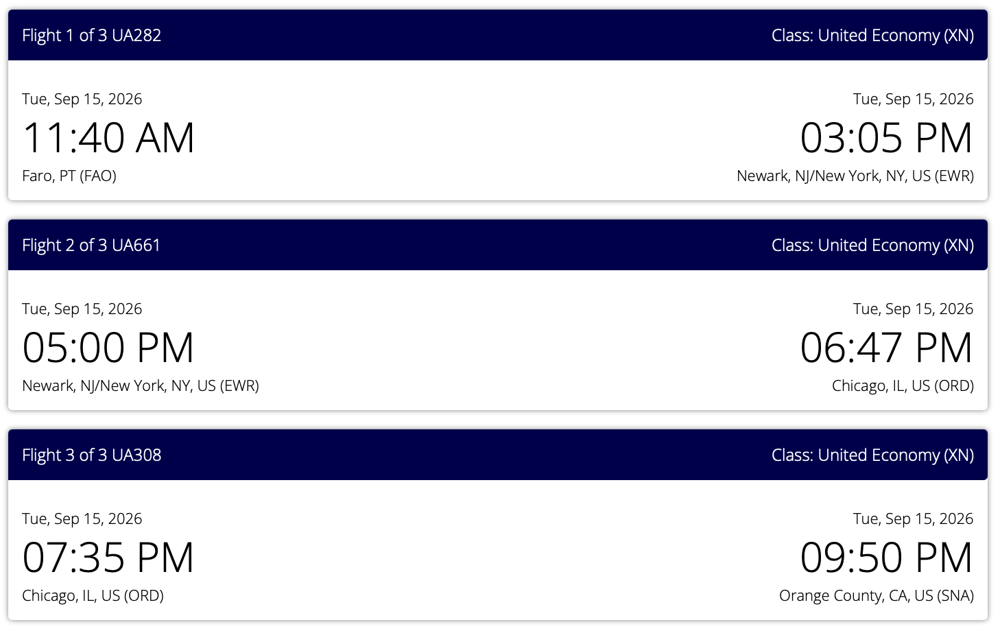

Per & Renee are traveling on TAP outbound and United home, with time in Lisbon before meeting Peter & Junko Collins in the Algarve.
MIA→LIS→Algarve→FAO→SNA
Outbound · Friday, Sep 4
TAP Air Portugal
Miami (MIA) → Lisbon (LIS)1:43 PM → 9:05 AM +114h 22m · 1 stop · terminal change noted in the itinerary
The screenshot shows the TAP itinerary as a points booking. Confirm the flight number, connection airport and terminal instructions in the TAP app before leaving for Miami.
Saved TAP itinerary reference
Sep 5–10 · Lisbon
Old-city base near Praça da Figueira
Stylish nest: Near Praça da Figueira & Cathedral is the current Airbnb placeholder. It is an entire home/apartment hosted by Hostee for four adults.
UA308 · Chicago (ORD) → Orange County (SNA)7:35 PM → 9:50 PMUnited Economy (XN) · 2 connections total
Allow extra time at Faro to return the car, refuel and reach the United check-in area. Recheck the live itinerary and terminal changes before departure.

Saved United itinerary reference
Trip resources
Portugal planning notes
Keep flexible
Points bookings & placeholder lodging
Confirm TAP connection details, terminals and seats in the airline app.
Confirm the United return itinerary and check-in window.
Reconfirm Lisbon Airbnb cancellation terms before the Aug 31 deadline.
Coordinate the Algarve days with Peter & Junko Collins.
Saved references
Flight and reservation captures
Flight summary captureAdditional flight note
Some saved captures show earlier or alternate searches. The current plan on this page is TAP outbound and United return; verify live details before travel.
Offline-ready
Add to Home Screen
Open this Portugal page online once after the latest details are loaded. The itinerary, reservation captures and app shell are cached for the iPhone web app.